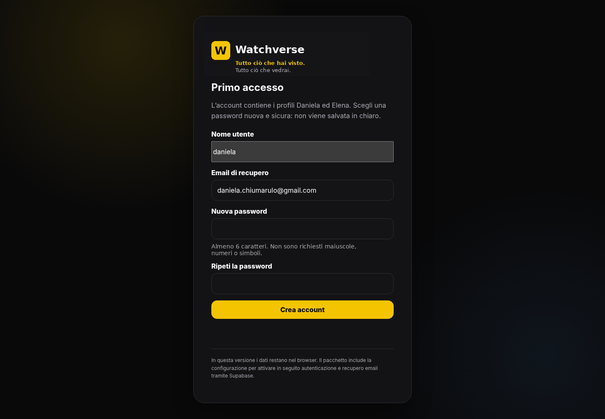
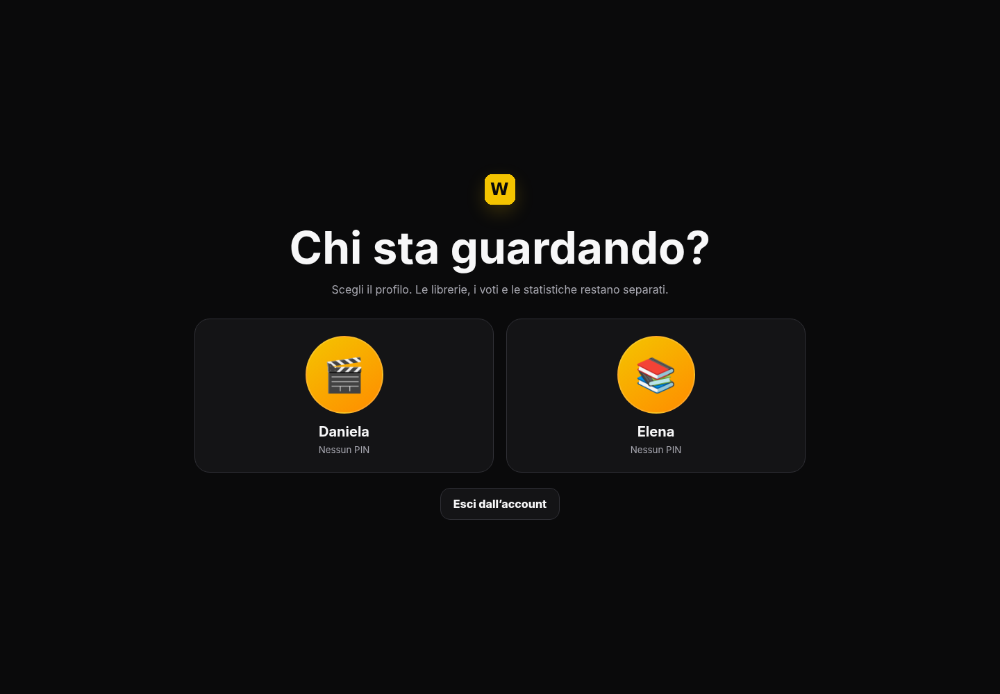
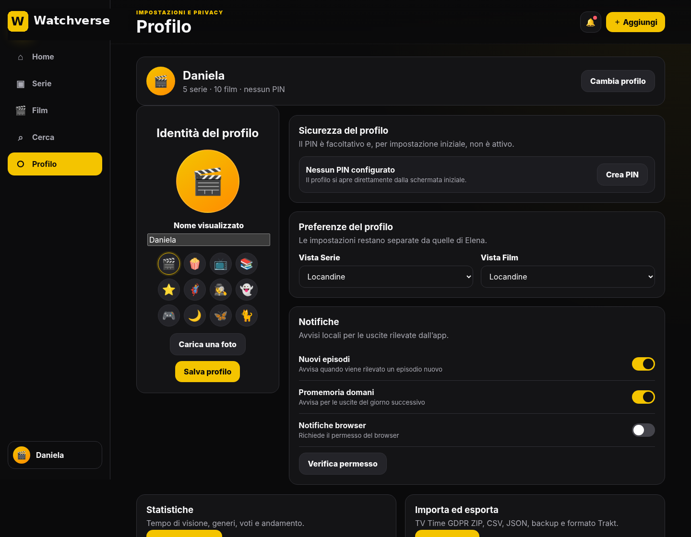
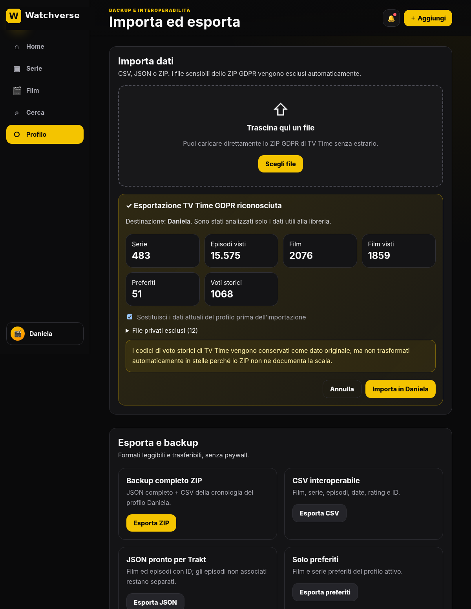
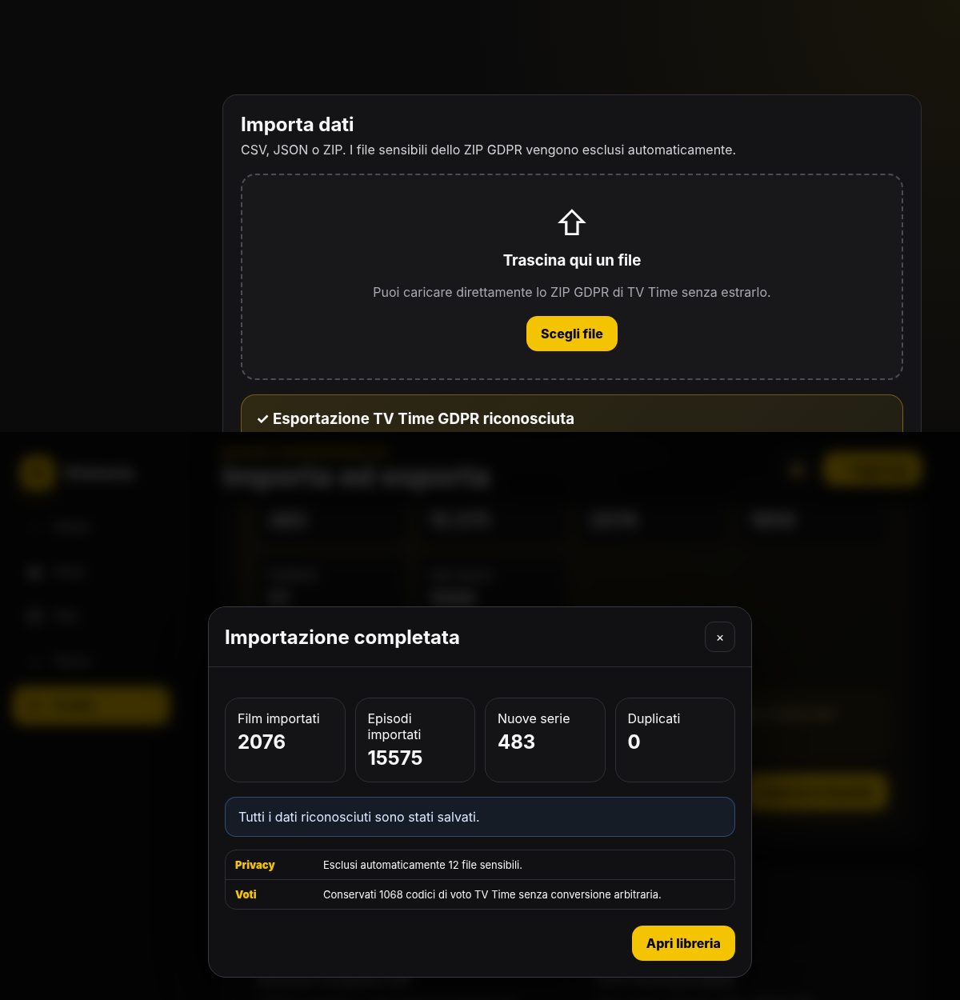
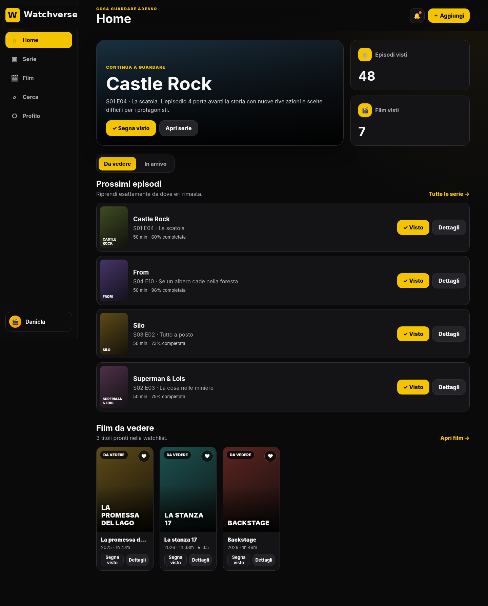

Watchverse
Tutto ciò che hai visto. Tutto ciò che vedrai.
Tracker privato e familiare per film, serie ed episodi, con profili separati, importazione TV Time e formati di backup trasferibili.
1. Stato della versione
| Funzione | Stato |
|---|---|
| Account familiare e password sul dispositivo | Operativa |
| Profili Daniela ed Elena separati | Operativa |
| PIN facoltativo, nome e avatar | Operativa |
| Importazione diretta ZIP GDPR TV Time | Operativa, con anteprima, barra di avanzamento e report finale |
| Film, serie, episodi, preferiti, rating e statistiche | Operativa |
| Temi per profilo e densità Comoda/Compatta | Operativa, inclusi The Last of Us con checkpoint, orologio rotto, torcia e cordyceps e Buffy con cimitero/paletto, con palette predefinite verificate |
| Dichiarazione e Assessment AI WCAG 2.2 | Disponibili nella pagina Accessibilità, con esiti e problemi noti |
| Backup ZIP, CSV e JSON per Trakt | Operativa |
| Locandine, descrizioni, episodi e cast | Recupero pubblico automatico da TVmaze e fonti Wikimedia |
| Cast nei dettagli | 8 interpreti principali leggibili su più righe, con link al cast completo su fonte esterna |
| Caroselli orizzontali | Navigazione tramite pulsanti ‹ ›, touch, trackpad e tastiera; scrollbar visibili rimosse |
| Provider streaming italiani | Disponibili configurando TMDB/JustWatch; vengono mostrati solo risultati effettivi per l’Italia |
| Trailer | Ricerca TMDB e, con avvia_server.py, ricerca pubblica YouTube filtrata |
| Programmazione cinema | Solo orari trovati sui siti ufficiali delle sale preferite, usando avvia_server.py |
| Login online e recupero password tramite email | Predisposti; richiedono Supabase |
| Sincronizzazione automatica telefono ↔ PC | Fase successiva |
| Notifiche a browser completamente chiuso | Fase successiva |
2. Primo avvio
- Per una prova immediata apri
watchverse_offline.htmlcon Chrome. Per attivare anche la ricerca automatica dei trailer, la programmazione dei cinema ufficiali, la PWA e il service worker, avviaavvia_server.pye apri l’indirizzo indicato. - Al primo accesso trovi già proposti il nome utente daniela e l’email di recupero. Scegli una password di almeno 6 caratteri; non sono richiesti maiuscole, numeri o simboli.
- Non usare la password indicata in precedenza in chat: va considerata esposta e non è adatta alla pubblicazione.
- Dopo la creazione dell’account, scegli il profilo Daniela o Elena.

Primo accesso: account familiare unico, password scelta dall’utente e recupero associato all’email principale.
3. Profili Daniela ed Elena
L’account è unico, ma i dati dei due profili sono distinti. Ogni profilo ha una propria cronologia, watchlist, preferiti, rating, statistiche e preferenze di visualizzazione.

Di default entrambi i profili si aprono senza PIN. Il PIN può essere attivato in seguito.
Profilo Daniela
Destinazione della libreria importata da TV Time. È il profilo proprietario e può gestire account, importazioni e profili familiari.
Profili vuoti
Daniela ed Elena partono senza dati demo. La Home propone subito l’importazione della libreria oppure l’aggiunta manuale del primo titolo.
4. Modificare nome, avatar e PIN
- Entra nel profilo interessato e apri Profilo.
- Nella sezione Identità del profilo modifica il nome, scegli un avatar oppure carica una foto.
- Nella sezione Sicurezza del profilo premi Crea PIN. Sono ammessi PIN numerici da 4 a 6 cifre.
- Quando un PIN esiste, puoi modificarlo, eliminarlo o recuperarlo verificando la password dell’account familiare.

Le impostazioni del profilo includono identità, PIN facoltativo, vista locandine/elenco e notifiche.
5. Importare lo ZIP GDPR di TV Time
- Accedi al profilo Daniela.
- Apri Profilo → Importa ed esporta.
- Premi Scegli file e seleziona direttamente
gdpr-data.zip. Non serve estrarlo. - Durante l’analisi resta visibile una barra di avanzamento con il nome del file elaborato.
- Prima di importare, Watchverse mostra quanti elementi ha riconosciuto: serie, serie da iniziare, episodi visti, film visti, film in watchlist, preferiti e voti storici.
- Controlla l’anteprima, lascia selezionata l’opzione per sostituire eventuali dati già presenti, poi premi il pulsante che indica il numero totale di elementi da importare.
- Durante il salvataggio una seconda barra mostra l’avanzamento separato per serie, film ed episodi.
- Al termine compare un report completo e una notifica chiudibile. Apri la libreria e controlla qualche serie lunga, alcuni film, preferiti e statistiche.

Anteprima dell’importazione: i file sensibili vengono esclusi automaticamente e i dati sono destinati al profilo attivo.

Riepilogo finale con elementi importati, duplicati, privacy e voti storici convertiti in stelle.
6. Usare la libreria

Home: prossimo episodio, avanzamento, riepiloghi e film in watchlist.
Home compatta
“Continua a guardare” e “Nuovi episodi da recuperare” mostrano card verticali in una sola riga. Su schermi piccoli puoi scorrere orizzontalmente con touch o pulsanti; i collegamenti “Tutte le serie” aprono il catalogo completo.
Serie
Di default si apre Da vedere. In cima trovi la serie con l’episodio non visto uscito più di recente. I filtri sono Da vedere, In corso, Da iniziare, Completate, Preferite e, per ultimo, Tutte.
Film
Di default si apre Visti, ordinata dalla data di visione più recente. I filtri terminano con Tutti; sono disponibili anche gli ordini per Voto e Titolo.
Catalogo condiviso
TVmaze e le fonti Wikimedia recuperano gradualmente locandine, descrizioni, episodi, date e cast. I dati comuni vengono salvati una sola volta sul dispositivo e riutilizzati da tutti i profili; visioni, voti e preferenze restano separati.
Prestazioni
Le librerie mostrano 60 titoli per volta; le immagini sono caricate solo quando servono e i progressi vengono indicizzati in memoria.
Provider italiani
Per streaming, noleggio e acquisto in Italia resta necessaria la configurazione facoltativa TMDB/JustWatch. La scheda mostra soltanto provider realmente restituiti; senza dati compare “Informazione non disponibile”.
Statistiche
Le schede Riepilogo, Film e Serie TV separano conteggi, tempi, generi e distribuzione dei voti. Il filtro periodo aggiorna realmente i dati basati sulle date di visione.
Calendario uscite
Gli episodi sono raggruppati per giorno. Le intestazioni indicano Oggi, Domani oppure il giorno della settimana e la data. Quando è nota, la disponibilità italiana è separata dall’uscita originale.
Aspetto e densità
Nel Profilo puoi scegliere uno dei temi predefiniti e confrontare la densità Comoda con quella Compatta. Colori e contrasto non sono modificabili liberamente.
Accessibilità
Il footer mostra versione, dichiarazione di accessibilità e report WCAG 2.2 completo. Nelle pagine lunghe compare anche il comando flottante “Torna su”.
Dettagli più leggibili
Banner, locandina, foto del cast, miniature episodi, trailer e suggerimenti restano dentro la propria cornice. Titolo, testo e azioni non possono essere coperti dalle immagini.
Trailer e cinema
Con avvia_server.py, Watchverse cerca un trailer pertinente e controlla i siti ufficiali delle sale preferite. Non vengono create tabelle cinema vuote: senza un risultato compare soltanto “Informazione non disponibile”.
7. Backup ed esportazioni
Dopo l’importazione crea subito un backup completo. I file sono salvati nella cartella Download del dispositivo.
- Backup ZIP: contiene JSON completo e CSV leggibile; è il formato migliore per ripristinare Watchverse.
- CSV interoperabile: cronologia con film, episodi, date, rating e identificativi.
- JSON pronto per Trakt: separa gli elementi con ID da quelli ancora da riconciliare.
- Preferiti: esportazione separata di film e serie preferiti.
watchverse-.8. Pubblicazione online: cosa è già pronto
Il pacchetto include manifest PWA, service worker, configurazione Netlify e cartella Supabase. Per una pubblicazione privata di prova puoi caricare la cartella shareable su Netlify.
- Pubblica soltanto il pacchetto shareable. Non pubblicare la cartella
private_importné lo ZIP GDPR. - Configura Supabase seguendo
supabase/README.md. - Inserisci in
config.jssoltanto URL Supabase, chiave publishable e URL del proxy TMDB. - Non inserire mai nel client la chiave
service_roleo il token TMDB.
9. Privacy e file da non pubblicare
Lo ZIP GDPR originale è sensibile.
Può contenere token, identificativi del dispositivo, indirizzi IP e dati dell’account. L’importatore Watchverse ignora automaticamente questi file e usa solo le informazioni utili alla libreria. Nonostante ciò:
- conserva lo ZIP originale in una cartella privata;
- non caricarlo su repository GitHub o hosting;
- non condividere il pacchetto personale Daniela;
- per Elena usa il pacchetto shareable privo di cronologia personale.